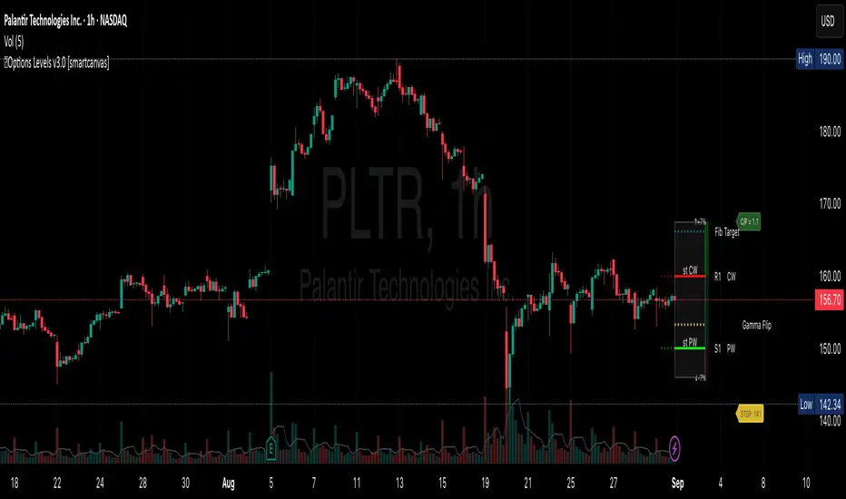

OBJETIVO
Para que serve
Exibir, em um único indicador, um conjunto amplo de referências derivadas de opções e gerar condições de alerta para proximidade, rompimento, bounce, rejeição e regimes de volatilidade.
Indicador Pine v6 com pacote de 17 métricas por ticker, incluindo Walls, IV, Implied Move, Vanna e lógica extensa de alertas.
OBJETIVO
Exibir, em um único indicador, um conjunto amplo de referências derivadas de opções e gerar condições de alerta para proximidade, rompimento, bounce, rejeição e regimes de volatilidade.
INPUT
String estruturada por ticker com 17 valores: S1, R1, Implied Move, Put Wall, Call Wall, Gamma Flip, IV, C/P ratio, trend, atividade, Walls de curto prazo e anteriores, Vanna ± e stop sugerido, além de timestamp global.
CÁLCULOS
VISUALIZAÇÃO
REFERÊNCIA VISUAL

AUTOMAÇÃO
Média. O indicador automatiza bastante a interpretação depois que recebe a string, mas a produção dos 17 campos ocorre fora do Pine.
INSTALAÇÃO
Instalação do Pine disponível. O tutorial cobre a instalação no TradingView, a entrada da string externa e a configuração de alertas. O gerador dos dados não está incluído.
LIMITAÇÕES
CÓDIGO-FONTE
COMPARAÇÃO
É o indicador mais rico em alertas e métricas operacionais. O qO é melhor em ladder/perfil GEX e conversão de proxies; Options Levels é mais simples; EWZ Mapa OI é mais fiel ao dado bruto; EWZ GEX → WIN é mais orientado à aquisição e projeção específica para o mercado brasileiro.